layout: true class: typo, typo-selection --- count: false class: center, middle # An introduction to<br /> implicit neural representations with a focus on NeSVoR<br /><br /> .smallish[DL Journal Club<br /><br /> Thomas Sanchez<br /> UNIL - CHUV - CIBM ] --- # Implicit neural models are amazing <p align="center"> <video controls width="70%" > <source src="img/inr_google.mp4" type="video/mp4"> </video> </p> .center[ [Google Keynote (Google I/O'22)](https://www.youtube.com/watch?v=nP-nMZpLM1A) .small[K. Rematas, et al. (2022) "Urban radiance fields." CVPR. J.T. Barron, et al. (2022) "Mip-nerf 360: Unbounded anti-aliased neural radiance fields." CVPR.] ] ??? This is _not_ a drone flying into a building. This is a neural rendering from pictures. --- # What are implicit neural representations (INRs)? * Modeling an image as a _continuous_ function of spatial coordinates. * Self-supervised learning (1 trained model per image) $$\begin{array}{ccc} \text{Classical deep learning} &\;\;\;\;\;\;\;\;\;\;\;\;& \text{Implicit neural models} \\\\ \mathbf{f}\_{\theta}: \mathbf{x} \rightarrow \mathbf{y} && f_{\theta}:(x,y,z)\rightarrow (v,\sigma) \\\\ \mathbf{x}, \mathbf{y} \in \mathbb{R}^N && x,y,z,v, \sigma \in\mathbb{R} \end{array}$$ <br /> .center[ 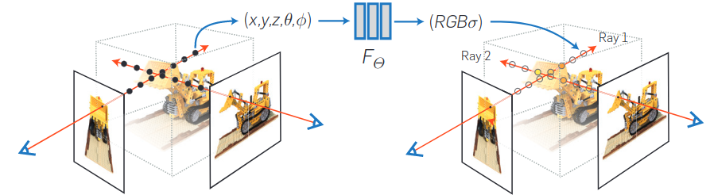<br /> ] .footnote[Mildenhall et al. (2020). NeRF: Representing Scenes as Neural Radiance Fields for View Synthesis. *ECCV*] --- # A brief intro to Neural Radiance Fields (NeRFs) Ingredients: 1. INR 2.Physical model 3. Loss **1. $\text{NeRF} \subset \text{implicit neural models} \approx \text{coordinate-based models} $.** $$f_{\theta}:(x,y,z)\rightarrow (v,\sigma)\;\;\; x,y,z,v, \sigma \in\mathbb{R}$$ <p align="center" style="position: absolute; bottom: 2em; margin-left: -150px;"> 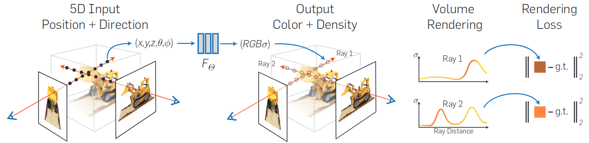<br /> </p> .footnote[Mildenhall et al. (2020)] ??? - INR: - $\mathbf{r} = (x,y,z)$ - Important bit: there is a physical model telling us what we will observe on our training data. --- # A brief intro to Neural Radiance Fields (NeRFs) Ingredients: 1. INR 2.Physical model 3. Loss **2. Physical model.** $$V(\mathbf{r})=\int T(t) \sigma(\mathbf{r}(t)) v(\mathbf{r}(t), \mathbf{d}) dt\;\;\;\;\;\; \text{ } T(t)=\exp \left(-\int^t \sigma(\mathbf{r}(s)) d s\right)$$ <p align="center" style="position: absolute; bottom: 2em; margin-left: -150px;"> <br /> </p> .footnote[Mildenhall et al. (2020)] ??? - INR: - $\mathbf{r} = (x,y,z)$ - Important bit: there is a physical model telling us what we will observe on our training data. --- # A brief intro to Neural Radiance Fields (NeRFs) Ingredients: 1. INR 2.Physical model 3. Loss **3. Loss.** $$\mathcal{L}=\sum_{\mathbf{r} \in \mathcal{R}}\|\hat{V}(\mathbf{r})-V(\mathbf{r})\|_2^2$$ <p align="center" style="position: absolute; bottom: 2em; margin-left: -150px;"> <br /> </p> .footnote[Mildenhall et al. (2020) ] ??? - After discretization ... - Self-supervised approach. --- # The results are impressive Synthetic, physics-rendered dataset. <p align="center"> 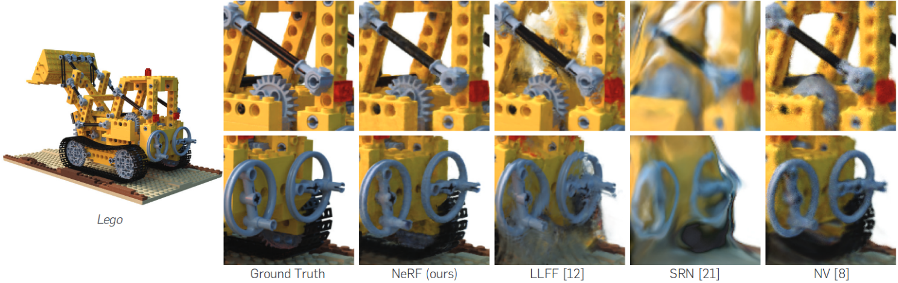<br /> </p> .footnote[Mildenhall et al. (2020) ] --- # The result is impressive Real-world data <p align="center"> 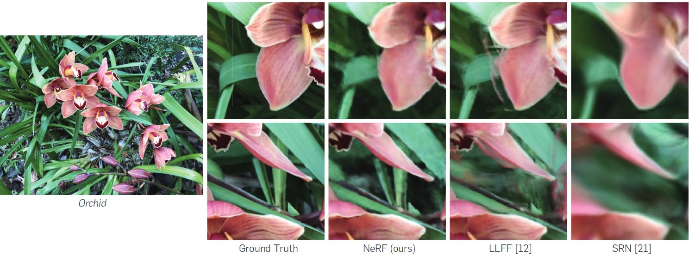<br /> </p> .footnote[Mildenhall et al. (2020) ] --- # An important detail Positional encodings help learning high frequency details.$^{*,\dagger}$ $$\gamma(p)=\left(\sin \left(2^{\circ} \pi p\right), \cos \left(2^{\circ} \pi p\right), \cdots, \sin \left(2^{L-1} \pi p\right), \cos \left(2^{L-1} \pi p\right)\right)$$ <p align="center"> 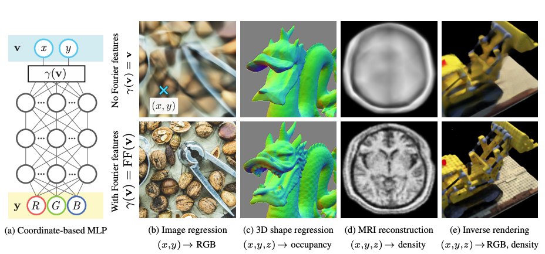<br /> </p> .footnote[ $^*$ N. Rahaman, et al. (2019). "On the spectral bias of neural networks." ICML<br /> $^\dagger$ M. Tancik, et al. (2020). "Fourier features let networks learn high frequency functions in low dimensional domains." NeurIPS ] --- # What's the catch? Training a the vanilla NeRF is very slow! <br /> <br /> <p align="center"> 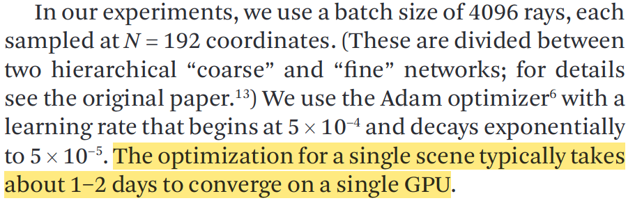<br /> </p> .footnote[Mildenhall et al. (2020) ] --- # NVIDIA gets involved ... Training goes down from *hours* to *seconds*. <p align="center"> 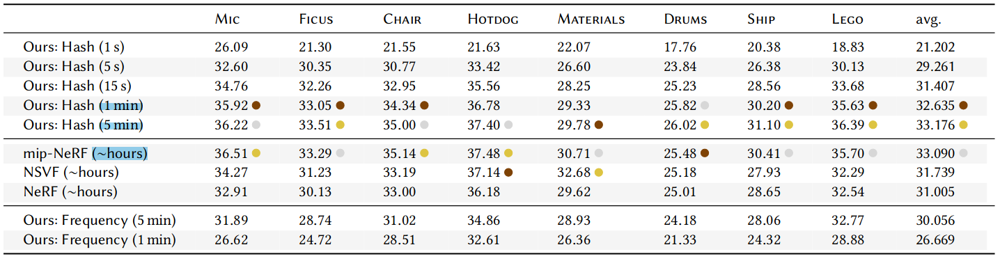<br /> </p> .footnote[T. Müller et al. (2022). Instant neural graphics primitives with a multiresolution hash encoding. ACM Transactions on Graphics (ToG), 41(4), 1-15.] --- count: false class: center, middle <p align="center"> 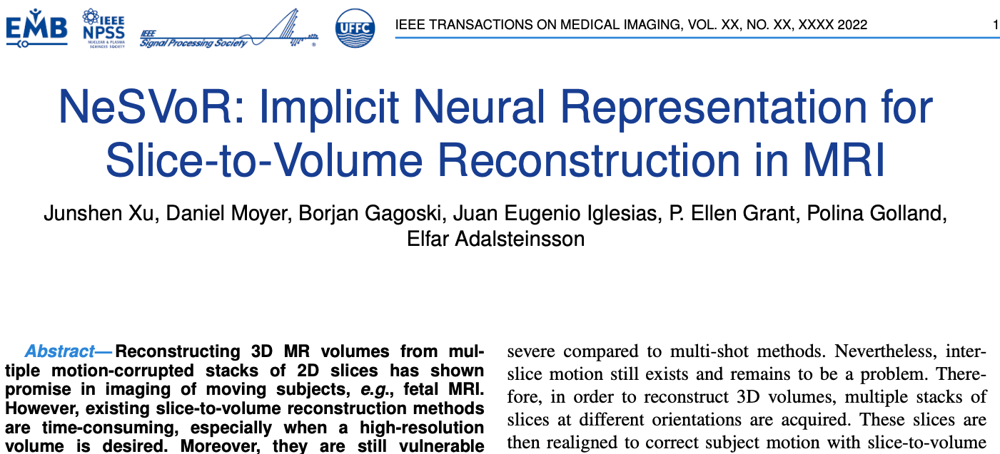<br /> </p> --- # Fetal brain MRI: a quick refresher .column-2[ *The problem of motion and low SNR* - Fast acquisition - Fast spin echo (FSE) sequences: 20-30 s ⇒ 1 slice in 1 s - Thick slices (resolution around 1x1x3mm3) - Orthogonal series (≥3) of 2D thick slices (3-5 mm) - Breath hold <p align="center"> 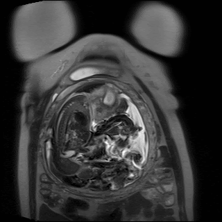<br /> </p> ] .footnote[Gholipour, Ali, et al. "Fetal MRI: a technical update with educational aspirations." Concepts in Magnetic Resonance Part A 43.6 (2014): 237-266.<br /> D. Prayer et al. (2017) "ISUOG Practice Guidelines: performance of fetal magnetic resonance imaging." Ultrasound in Obstetrics & Gynecology.] --- class: split-70 # Faster acquisition is not a silver bullet .column[ *Remaining challenges:* <br /> - Orthogonal acquired planes do not correspond to anatomical planes <br /><br /> - Inter-slices and inter-stacks motion corruption <br /><br /> - Inter-slice morphometry corrupted by motion and strong anisotropy ] .column[ <p> 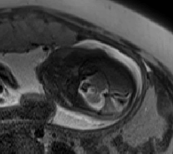<br /> </p> <p align="center"> 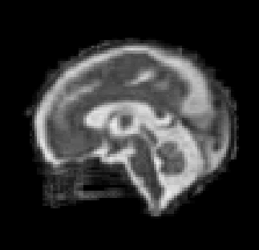<br /> </p> <p> 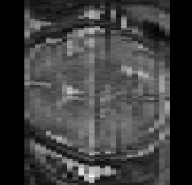<br /> </p> ] --- # Super-resolution reconstruction Multiple motion corrupted acquisition $\to$ Single isotropic reconstructed volume <p align="center"> <img src="img/srr.png" width="100%" /> </p> --- # NeSVoR **Why you should care about this paper** (and INRs in general) - NeSVoR greatly reduces the reconstruction time of fetal brain MRI - NeSVoR is very robust to bad quality input. - INRs are fascinating - INRs are a natural way to frame _many_ biomedical imaging problems. --- class: split-70 # NeSVoR in practice The three ingredients of NeRF: 1. INR **2.Physical model** 3. Loss .column[ $$I\_{i j}=C\_i \int\_{\Omega} M\_{i j}(x) B\_i(x)\left[V(x)+\epsilon\_i(x)\right] \mathrm{d} x$$ ] .column[ - $I \in \mathbb{R}^{N\_s \times N\_p}$: Acquired data<br /> ($N\_s$: n. slices $N\_p$: n. pixels) - $I\_{ij}$: $i$-th pixel of $j$-th slice - $\Omega$: Region of interest ] <p align="center"> 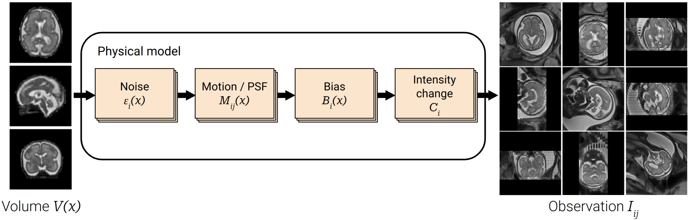<br /> </p> --- class:split-15 # NeSVoR in practice *How do you estimate $C\_i$, $M\_{i j}(x)$, $B\_i(x)$, $\epsilon\_i(x)$? How do you retrieve $V(x)$?* $$I\_{i j}=C\_i \int\_{\Omega} M\_{i j}(x) B\_i(x)\left[V(x)+\epsilon\_i(x)\right] \mathrm{d} x$$ -- .column[ Solution: ] .column[ .smallish[1. Represent $V(x)$ as an INR; 2. Find a way to learn/estimate $C\_i$, $M\_{i j}(x)$, $B\_i(x)$ and $\epsilon\_i(x)$; 3. Backpropagate.] ] <p align="center"> <br /> </p> --- class: split-15 # NeSVoR in practice *How do you estimate $C\_i$, $M\_{i j}(x)$, $B\_i(x)$, $\epsilon\_i(x)$? How do you retrieve $V(x)$?* $$I\_{i j}=C\_i \int\_{\Omega} M\_{i j}(x) B\_i(x)\left[V(x)+\epsilon\_i(x)\right] \mathrm{d} x$$ .column[ Solution: ] .column[ .smallish[1. Represent $V(x)$ as an INR; 2. Find a way to learn/estimate $C\_i$, $M\_{i j}(x)$, $B\_i(x)$ and $\epsilon\_i(x)$; 3. Backpropagate.] ] <p align="center"> 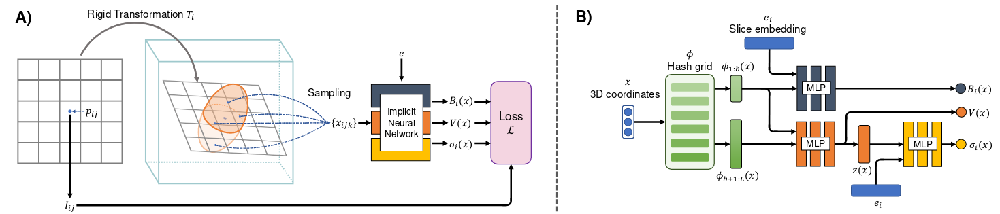<br /> </p> ??? Basic idea: for each of the unknowns, find a way of incorporating them in the model. - Noise: Gaussian noise -> Negative log likelihood and learn image value + variance - Motion: Use SVoRT to estimate it - Bias: learn it with a NN - Slice scaling factor: learnable parameters with norm 1. - To learn it: need models and losses --- # A deep dive into NeSVoR Three main steps: 1. Construct a discrete model 2. Map the coordinates from the pixel space $p\_{ij}$ to the sampling space $x\_{ijk}$. $\Rightarrow$ Use SVoRT$^*$ 3. Find a way to learn/estimate $C\_i$, $M\_{i j}(x)$, $B\_i(x)$ and $\epsilon\_i(x)$. <p align="center"> 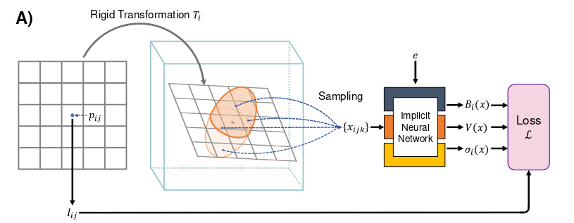<br /> </p> --- # A deep dive into NeSVoR **1. Construct a discrete model** Discretize the integral: $$I\_{i j}=C\_i \int\_{\Omega} M\_{i j}(x) B\_i(x)\left[V(x)+\epsilon\_i(x)\right] \mathrm{d} x$$ -- Get a value of the mean and the variance of each pixel: $$\bar{I}\_{ij} = \mathbb{E}\left[I\_{i j}\right]\approx\frac{C\_i}{K} \sum\_{k=1}^K B\_i\left(x\_{i j k}\right) V\left(x\_{i j k}\right)$$ $$\sigma\_{ij}^2 = \operatorname{var}\left(I\_{i j}\right) \approx\frac{C\_i^2}{K} \sum\_{k=1}^K M\_{i j}\left(x\_{i j k}\right) B\_i^2\left(x\_{i j k}\right) \sigma\_i^2\left(x\_{i j k}\right)$$ ??? - $I\_{ij}$ is a RV, because of the way we model the noise: compute the mean and the variance of the RV and approximate it with Monte-carlo sampling. - We secretly assume that $\epsilon\_i(x)$ is estimated: it is a Gaussian with unknown variance $\sigma_i$ --- # A deep dive into NeSVoR **2. Map the coordinates from the pixel space $p\_{ij}$ to the sampling space $x\_{ijk}$** - Use SVoRT$^*$ to map all slices into a common space. - Incorporate the point-spread function (PSF) model in $M\_{ij}(x\_{ijk})$. <p align="center"> <br /> </p> .footnote[$^*$ J. Xu, et al. (2022) "SVoRT: Iterative transformer for slice-to-volume registration in fetal brain MRI." MICCAI.] ??? - Data are mapped from a two-dimensional space for each slice to a 3D, unique space. --- # A deep dive into NeSVoR **2. Find a way to learn/estimate $\color{red}C\_i$, $\color{blue} M\_{i j}(x)$, $\color{red} B\_i(x)$ and $\cancel{\epsilon\_i(x)}$ $\color{red} \sigma\_i^2(x)$** 3 implicit networks - For the volume itself: $[V(x), z(x)]=\operatorname{MLP}\_V(\phi(x))$ - For the bias field: $B\_i(x)=\operatorname{MLP}\_B\left(\phi\_{1: b}(x), e\_i\right)$ - For the variance: $\sigma\_i^2(x)=\operatorname{MLP}\_\sigma\left(z(x), e\_i\right)$ <p align="center"> <br /> </p> ??? Additional subtlety: slice-wise encoding - Martin-Brualla, Ricardo, et al. "Nerf in the wild: Neural radiance fields for unconstrained photo collections." Proceedings of the IEEE/CVF Conference on Computer Vision and Pattern Recognition. 2021. - Bojanowski, Piotr, et al. "Optimizing the latent space of generative networks." arXiv preprint arXiv:1707.05776 (2017). --- # A deep dive into NeSVoR **2. Find a way to learn/estimate $\cancel{\color{red}C\_i}$, $\color{blue} M\_{i j}(x)$, $\color{blue} B\_i(x)$ and $\cancel{\epsilon\_i(x)}$ $\color{blue} \sigma\_i^2(x)$** The last ingredient: **losses** $$\arg \min\_{\Theta} \mathcal{L}(\Theta), \quad \mathcal{L}=\mathcal{L}\_I+\lambda\_B \mathcal{R}\_B+\lambda\_V \mathcal{R}_V$$ -- - Slice reconstruction: $\mathcal{L}\_I=\frac{1}{|\mathcal{B}|} \sum\_{(i, j) \in \mathcal{B}} \mathcal{L}\_{i j}, \;\; \mathcal{L}\_{i j}=\frac{\left(I\_{i j}-\bar{I}\_{i j}\right)^2}{2 \sigma\_{i j}^2}+\frac{1}{2} \log \left(\sigma\_{i j}^2\right)$ -- - Image regularization: $\mathcal{R}\_V=\frac{2}{K|\mathcal{B}|} \sum\_{(i, j) \in \mathcal{B}} \sum\_{k=1}^{K / 2} r\left(\frac{\left|V\left(x\_{i j k}\right)-V\left(x\_{i j l}\right)\right|}{\left\|x\_{i j k}-x\_{i j l}\right\|\_2}\right)$ -- - Bias field: $\mathcal{R}\_B=\left(\frac{1}{K|\mathcal{B}|} \sum\_{(i, j) \in \mathcal{B}} \sum\_{k=1}^K \log B\_i\left(x\_{i j k}\right)\right)^2$ ??? Point of the bias field constraint: disambiguate as it is only unique up to a given constant $c$. If $(B\_i, V)$ is a solution, then $(cB\_i, \frac{1}{c}V)$ is also feasible $\forall c > 0$. Enforce $\int\_{\Omega} \log B\_i(x) \mathrm{d} x=0$ --- <p align="center"> 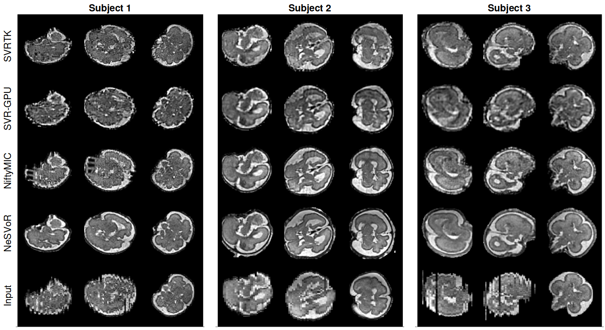 </p> --- # NeSVoR gives you different resolutions for free <p align="center"> 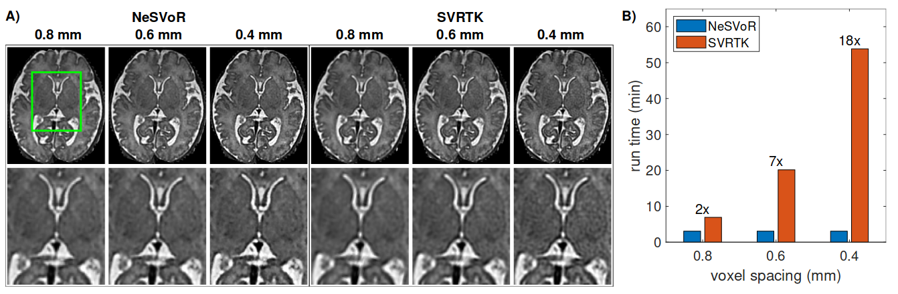 </p> --- count: false class: center, middle # Conclusion --- # Wrapping up **Why you should care about NeSVoR** (and INRs in general) - NeSVoR greatly reduces the reconstruction time of fetal brain MRI - NeSVoR is very robust to bad quality input. - INRs are fascinating - INRs are a natural way to frame _many_ biomedical imaging problems. -- - Undersampled MRI/CT reconstruction$^{1,2}$ Registration$^3$ - Segmentation$^{4,5}$ Ultrasound imaging $^6$ .footnote[.tiny[- $^1$ L. Shen et al. (2022). NeRP: implicit neural representation learning with prior embedding for sparsely sampled image reconstruction. IEEE TNNLS. - $^2$ A. Corona-Figueroa et al. (2022). "MedNeRF: Medical neural radiance fields for reconstructing 3d-aware ct-projections from a single x-ray." EMBC. - $^3$ J.M. Wolterink et al. (2022). "Implicit neural representations for deformable image registration." MIDL. - $^4$ S. Vora et al. "NeDF: Neural semantic fields for generalizable semantic segmentation of 3D scenes." arXiv:2111.13260. - $^5$ H. Zhang et al. (2021). "NeRD: Neural representation of distribution for medical image segmentation." arXiv:2103.04020. - $^6$ M. Wysocki et al. (2023)- "Ultra-NeRF: Neural Radiance Fields for Ultrasound Imaging." arXiv:2301.10520. ]] -- - Huge application in computer vision and graphics --- count: false class: center, middle # Thank you for your attention .large[Questions?] --- # References .small[ - [TUM AI Lecture Series - Neural Fields Beyond Novel View Synthesis (Andrea Tagliasacchi)](https://www.youtube.com/watch?v=nRCOsBHt97E) - B. Mildenhall, P.P. Srinivasan, M. Tancik, J.T. Barron, R. Ramamoorthi, & R. Ng (2020, August). NeRF: Representing Scenes as Neural Radiance Fields for View Synthesis. ECCV. - N. Rahaman, et al. (2019). "On the spectral bias of neural networks." ICML. - M. Tancik, et al. (2020). "Fourier features let networks learn high frequency functions in low dimensional domains." NeurIPS. - T. Müller, A. Evans, C. Schied, C., & A. Keller (2022). Instant neural graphics primitives with a multiresolution hash encoding. ACM ToG. - D. Prayer et al. (2017) "ISUOG Practice Guidelines: performance of fetal magnetic resonance imaging." Ultrasound in Obstetrics & Gynecology. - J. Xu, D. Moyer, B. Gagoski, J.E. Iglesias, P.E. Grant, P. Golland and E. Adalsteinsson (2023). NeSVoR: Implicit Neural Representation for Slice-to-Volume Reconstruction in MRI. IEEE Transactions on Medical Imaging. - J. Xu, et al. (2022) "SVoRT: Iterative transformer for slice-to-volume registration in fetal brain MRI." MICCAI. - L. Shen et al. (2022). NeRP: implicit neural representation learning with prior embedding for sparsely sampled image reconstruction. IEEE TNNLS. - A. Corona-Figueroa et al. (2022). "MedNeRF: Medical neural radiance fields for reconstructing 3d-aware ct-projections from a single x-ray." EMBC. - J.M. Wolterink et al. (2022). "Implicit neural representations for deformable image registration." MIDL. - S. Vora, et al. "NeDF: Neural semantic fields for generalizable semantic segmentation of 3D scenes." arXiv:2111.13260. - H. Zhang et al. (2021). "NeRD: Neural representation of distribution for medical image segmentation." arXiv:2103.04020. - M. Wysocki et al. (2023)- "Ultra-NeRF: Neural Radiance Fields for Ultrasound Imaging." arXiv:2301.10520. ] --- count: false class: center, middle # Appendix --- # Additional subtleties of NeSVoR - Slice scaling factor $$C=N\_s \operatorname{softmax}(c), \quad C\_i=\frac{N\_s \exp \left(c\_i\right)}{\sum\_{j=1}^{N\_s} \exp \left(c\_j\right)}$$ - Slice-wise variance $$\sigma\_{i j}^2=\operatorname{var}\left(I\_{i j}\right)+\nu\_i^2$$ ??? Slice scaling factor: sum of to $1$ in average The point of $\nu\_i$ is to downplay the role from an entire slice when it is of low quality.